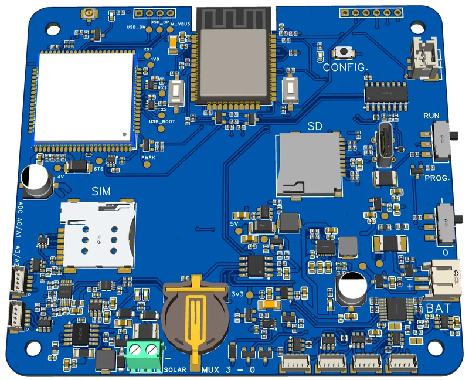
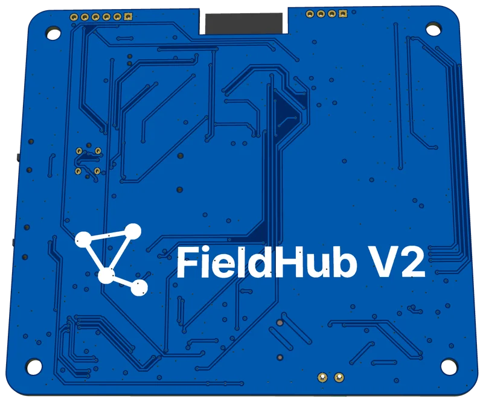

The monitoring problem
Organisms experience climate at centimetre-to-metre scales, while standard weather stations are designed for consistent regional measurements. Vegetation structure, soil moisture, topography, shade and airflow can therefore create biologically important conditions that a distant station does not represent.
This scale mismatch is especially relevant in solar photovoltaic landscapes. Under-panel zones, inter-row corridors and edges can create different radiation, wind, temperature and moisture conditions across short distances, as set out in a recent review of microclimates and biodiversity in large-scale solar facilities. The research need is for many distributed measurement points that can operate with limited power and connectivity.
What FieldMesh is
FieldMesh has two hardware tiers and a cloud layer. Sensor nodes are small solar-charged devices that are fully powered off between measurements. A real-time-clock alarm wakes the node, which samples its sensors with the radio off, stores the reading locally and powers down again. At scheduled sync windows, nodes hand their queued readings to the FieldHub over ESP-NOW.
The FieldHub coordinates those sync windows, logs every reading to on-board flash and a microSD archive, and uploads over LTE. It can also run standalone, keeping data on the hub or sending it to a project’s own HTTPS endpoint instead of the FieldMesh cloud. A local setup portal on the hub handles pairing, deployment and configuration in the field.
Local storage is the primary record. A node keeps each reading until the FieldHub confirms it has been written, the hub only clears readings the backend has confirmed storing, and the backend recognises repeated uploads. A failed link therefore means a later retry, never a lost or duplicated measurement.
Hardware
Both boards have been through several revisions as bench and field testing exposed problems. Each revision gets a written engineering review before anything is ordered.
| Board | Revision | Status |
|---|---|---|
| Sensor node | V3 | Used for the 2026 bench and field trials |
| Sensor node | V4 | Layout complete; final review changes being made before prototype production |
| FieldHub | v2, revision 6 | Five-board prototype batch in bench bring-up |
Node V4 is a redesign around connecting more kinds of sensor. It adds an MPPT solar charger that blocks charging at unsafe battery temperatures, selectable 3.3 V, 5 V or 12 V sensor power, protected 0–12 V analogue inputs, four-channel I²C expansion, RS-485/Modbus and SDI-12 for commercial environmental sensors, and two protected pulse inputs. A final independent review found several small changes to make before fabrication, including an incorrect SDI-12 resistor value and improvements to reverse-battery protection. Prototype validation and the matching firmware changes follow.
FieldHub v2 brings the gateway onto one custom board with an LTE Cat-1 modem, a real-time clock, microSD storage, MPPT charging from a 6 V solar panel, and four switched sensor ports for planned on-hub measurements. Bench bring-up has verified the four I²C sensor ports, including operation at 400 kHz, and all four ADS1015 analogue inputs, which read within about 1% of a reference meter with no observed crosstalk. The reed input works, but its current GPIO is susceptible to interference from Wi-Fi and ADC activity, which the next revision will correct.
Both tiers are housed in commercial IP-rated junction boxes. Custom printed parts are limited to sensor housings: a radiation shield for the air sensor and a diffuser housing for the spectral sensor.
FieldHub v2 board


Measurements
Node V3 records the channels below. I²C sensors such as the SHT4x and AS7341 are detected by the node; the other inputs are enabled through the deployment configuration.
| Channel | Sensor | Unit or output |
|---|---|---|
| Air temperature | SHT4x | °C |
| Relative humidity | SHT4x | % |
| Spectral light, 8 bands | AS7341 | Raw counts at 415–680 nm |
| Clear / NIR / gain / integration / saturation | AS7341 | Counts, multiplier, ms and status flag |
| Soil moisture ×2 | CWT TH-A probes via ADS1015 | Probe voltage |
| Soil temperature ×2 | CWT TH-A probes via ADS1015 | °C |
| Wind speed | Reed-cup anemometer | m/s |
| Battery voltage | Node ADC, calibrated | V |
| Auxiliary ×2 | Expansion ports | Reserved |
Raw by design: soil moisture is stored as probe voltage so that probe-specific calibration curves can be applied during analysis, and spectral light is stored as raw counts rather than converted to PAR.
Wind: the ultrasonic anemometer explored on early boards has been dropped. Wind speed now comes from a reed-cup anemometer, which has been validated on its own; testing through the full node-to-cloud path is next.
How the network operates
Node lifecycle. A node moves through unpaired, paired and deployed states. A deployed node can be placed in standby, keeping its scheduled check-ins without recording. Each deployment is its own data series: moving a node to a new site starts a new deployment, and ended deployments are archived rather than mixed with new data.
Measurement wake. The DS3231 real-time clock starts the node, sensors are read into a snapshot and the record is stored locally. The radio stays off during this wake. The next alarm is armed before slower sensor work, reducing the risk that a stalled operation leaves the node without a future wake time.
Coordinated sync. At the scheduled radio window, the FieldHub announces a session and nodes respond after a randomised delay. Registered nodes receive bounded transfer grants rather than transmitting at once, and each queued snapshot stays on the node until the FieldHub acknowledges that it has been written. Nodes wake shortly before their slot and reject time updates that would move their clock backwards.
Field configuration. A button press opens a password-protected setup portal on the FieldHub for 30 minutes. From a phone, operators pair and deploy nodes, configure sensors and set the schedule. Node configuration is declarative and versioned, and a change only counts as applied once the node reports the matching version, so changes sent remotely from the dashboard are safe to repeat. A rapid-boot rescue gesture keeps a node awake and discoverable so the hub can recover it without losing its configuration.
Cloud and dashboard
Since October 2026 the cloud layer runs entirely on Supabase: PostgreSQL, Auth, Row Level Security, Edge Functions, Realtime and Storage. The original Google Apps Script backend has been removed. Data is organised into projects, each with an owner, editors and read-only viewers, and access rules are enforced in the database so one project cannot read another’s data.
Devices. Each FieldHub has its own revocable key, stored only as a hash. New hubs are set up from a QR code holding a short-lived, single-use provisioning code that the hub exchanges for its key over LTE, so a permanent credential is never printed or photographed. The backend side is complete; hub-side support is being validated on hardware.
Ingestion. Uploads are authenticated before they are read, size-limited and idempotent, so a repeated upload is recognised and ignored. Readings from a device with an implausible clock are still stored, but cannot overwrite the current state recorded from a trusted clock.
Dashboard. The React and Vite dashboard shows FieldHub and node health, live readings, a deployment map and spectral profiles. Users can compare nodes over time, including wind and light-quality ratios; manage deployments, pause and resume nodes and change the recording interval remotely; and export CSV with local times in each project’s own time zone. FieldHub pages cover provisioning, key revocation, health history and firmware.
Testing. A CI pipeline runs the dashboard’s unit tests, database access-policy tests, Edge Function tests, concurrency checks and a smoke test against a seeded local backend.
Over-the-air updates
FieldHub firmware updates are signed with Ed25519 and checked against a SHA-256 hash before the hub switches to the new image. Updates use A/B firmware slots, and the hub rolls back automatically if the new image fails to confirm itself after boot. A full cloud update was completed on a bench FieldHub in July 2026.
Release publishing is now limited to approved operators, and every release is signature-checked on the server before it is made available. The first release through this production pipeline is still to come. Node firmware is updated by cable.
Power and recovery design
Both hardware tiers use a switched-power architecture. A PWR_HOLD signal latches the active rail when the device wakes; releasing it powers the board off completely. An always-on low-power regulator keeps only the DS3231 real-time clock and the configuration latch alive, and the clock controls future measurement and sync alarms.
The design does not depend on ESP32 deep sleep. Full power-off is the normal state, with active time limited to sampling, synchronisation or upload work. Schedule changes include grace cycles so nodes on the previous timing are not stranded during a transition.
- Local-first data: persist measurements before attempting cloud transfer.
- Power-off by default: remove the switched rail between scheduled wakes.
- Durable acknowledgement: clear a record only after the next tier confirms storing it.
- Coordinated radio access: grant transfer windows rather than relying on contention.
- Idempotent uploads: make every retry safe to repeat.
- Version-aware configuration: keep changes repeatable and tolerant of older nodes.
- Signed, recoverable updates: verify every image and keep a known-good fallback.
Testing and field trials
Bench: multi-node validation began in May 2026, alongside ESP-NOW link testing at distances of up to 100 m. Deployment-lifecycle scenarios have been tested on-device and against the production backend.
First end-to-end path: in July 2026 three nodes carried readings through the FieldHub and LTE into the cloud database, followed by a three-node trial in Germany.
First field deployment: four nodes and a FieldHub were deployed at a UNE solar-farm study site in Australia in August 2026. Field setup drove several firmware changes, including a longer cold-start registration budget for the modem and fixes to chunked LTE uploads.
Current status
Hardware: FieldHub v2 revision 6 is in bench bring-up. The sensor ports and analogue inputs are verified, while ESP-NOW communication, RTC backup retention and longer wake-cycle tests are still to run. The Node V4 layout is complete, and the final review changes are being made before prototype production.
Firmware: coordinated sync, deployment lifecycle, standalone operation and signed FieldHub updates are implemented and bench-tested. One-time provisioning is being validated on hardware, and Node V4 support is next.
Cloud: the backend has been Supabase-only since October 2026, following a hardening pass on provisioning, ingestion and release publishing.
Next: measuring hub-to-node sync timing with controlled boot delays, so that network capacity rests on measured behaviour rather than estimates; multi-week deployments to measure upload reliability and battery life under sustained field duty; calibration of the soil-moisture probes; and the first release through the production update pipeline.